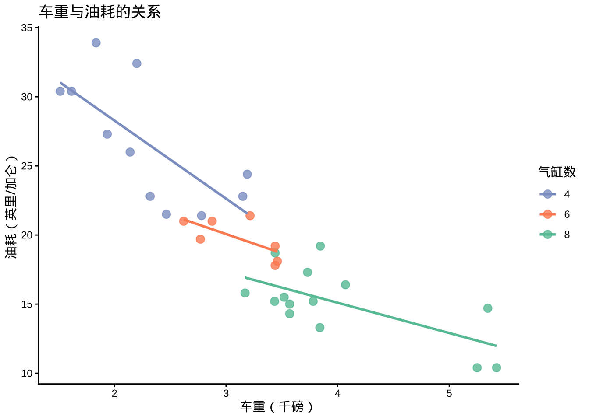
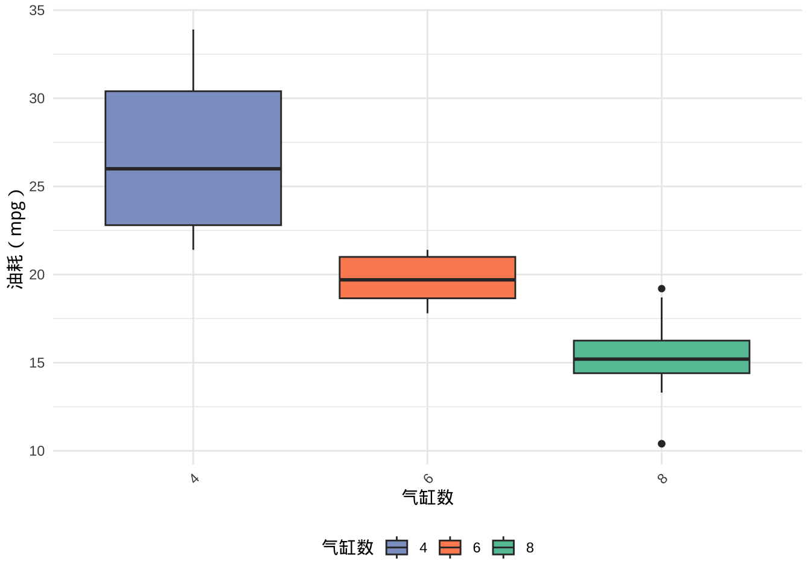

install.packages("tidyverse")
library(tidyverse)L18
用AI辅助R学习与代码生成
请务必先运行下方代码
在尝试后续页面的任何示例代码之前，请确保您已经在自己的电脑上运行了这段安装R包的代码。
1 AI能帮你做什么？
学 R 最大的门槛不是统计知识，而是 “我知道我想做什么，但不知道怎么用 R 写出来”。
AI 恰好可以填补这个空缺：
| 你的需求 | AI 能做的 |
|---|---|
| 不会写代码 | 根据描述直接生成代码 |
| 代码报错了 | 解释错误原因并修复 |
| 看不懂别人的代码 | 逐行解释代码含义 |
| 想换一种写法 | 提供替代方案 |
| 不知道用哪个函数 | 推荐合适的函数和包 |
常用的 AI 工具
| 工具 | 地址 | 特点 |
|---|---|---|
| ChatGPT | chat.openai.com | 最流行，中英文均可 |
| Claude | claude.ai | 代码能力强，解释清晰 |
| Gemini | gemini.google.com | 与 Google 生态整合 |
| GitHub Copilot | 集成在 RStudio 中 | 边写边自动补全代码 |
| DeepSeek | chat.deepseek.com | 中文友好，代码能力强 |
2 让AI生成、解释、修改代码
基本原则：描述要具体
Tip
好的提问 = 数据描述 + 想要的结果 + 格式要求
“我有一个数据框，有 mpg（油耗）和 cyl（气缸数）两列，
请用 ggplot2 画一个箱线图，x 轴是气缸数，y 轴是油耗，
不同气缸数用不同颜色填充，用 theme_minimal() 主题。”
模糊提问 vs 具体提问
❌ 模糊提问（AI 给出的代码往往不是你想要的）：
“帮我画个图”
✅ 具体提问（AI 能直接给出可运行的代码）：
“用 R 的 ggplot2 包，以 mtcars 数据集为例， 画一个散点图，x 轴是车重（wt），y 轴是油耗（mpg）, 按气缸数（cyl）用不同颜色区分，加上线性趋势线，用 theme_classic() 主题，中文坐标轴标签。
实际演示：把需求告诉 AI
你的提问：
用 R 的 ggplot2，以 mtcars 数据为例，
画一个散点图：x 轴是车重(wt)，y 轴是油耗(mpg)，
按气缸数(cyl)分组用不同颜色，加线性趋势线，
theme_classic() 主题，中文标签。AI 给出的代码：
library(ggplot2)
ggplot(mtcars, aes(x = wt, y = mpg, color = factor(cyl))) +
geom_point(size = 3, alpha = 0.8) +
geom_smooth(method = "lm", se = FALSE) +
scale_color_manual(values = c("#8DA0CB", "#FC8D62", "#66C2A5")) +
labs(title = "车重与油耗的关系",
x = "车重（千磅）",
y = "油耗（英里/加仑）",
color = "气缸数") +
theme_classic()
让 AI 解释代码
看到别人的代码看不懂？直接让 AI 逐行解释。
你的提问：
请逐行解释下面这段 R 代码的含义：
mtcars |>
filter(cyl == 4) |>
mutate(kpl = mpg * 0.425) |>
group_by(am) |>
summarise(
n = n(),
kpl_mean = mean(kpl) |> round(2)
)AI 的解释：
library(tidyverse)
mtcars |>
filter(cyl == 4) |> # 只保留 4 缸的车
mutate(kpl = mpg * 0.425) |> # 新增一列：将油耗换算为 km/L
group_by(am) |> # 按变速箱类型（0自动/1手动）分组
summarise(
n = n(), # 计算每组的样本量
kpl_mean = mean(kpl) |> round(2) # 每组的平均油耗（km/L）
)# A tibble: 2 × 3
am n kpl_mean
<dbl> <int> <dbl>
1 0 3 9.73
2 1 8 11.9 💡 把 AI 的解释写成注释加在代码里，
这是提升 R 代码阅读能力最快的方法。
让AI 修改和优化代码
有了能跑的代码之后，可以继续让 AI 帮你改。
常见的追问方式：
上面的代码能正常运行，请帮我：
1. 把图的主题改为 theme_minimal()
2. 把图例放到图的底部
3. x 轴的文字旋转 45 度# AI 根据追问修改后的代码
ggplot(mtcars, aes(x = factor(cyl), y = mpg, fill = factor(cyl))) +
geom_boxplot() +
scale_fill_manual(values = c("#8DA0CB", "#FC8D62", "#66C2A5")) +
labs(x = "气缸数", y = "油耗（mpg）", fill = "气缸数") +
theme_minimal() +
theme(
legend.position = "bottom", # 图例放底部
axis.text.x = element_text(angle = 45, hjust = 1) # x轴旋转
)
3 让AI 解释报错
报错是学 R 最令人沮丧的时刻，AI 可以成为你的”随身翻译”。
如何把报错告诉 AI？
Tip
- 把完整的报错信息粘贴给 AI
- 把出错的代码也一并贴上
- 说明你想做什么
示例：把报错交给 AI 处理
你告诉 AI：
我运行下面的代码报错了，请帮我解释原因并修复：
代码：
select(mtcars, mpg, cyl)
报错信息：
Error in select(mtcars, mpg, cyl) :
could not find function "select"
我想做的是：从 mtcars 里选出 mpg 和 cyl 两列。AI 的回答
select()函数来自dplyr包，你还没有加载这个包。
在代码前加上library(dplyr)即可。
library(dplyr)
select(mtcars, mpg, cyl) |> head(3) mpg cyl
Mazda RX4 21.0 6
Mazda RX4 Wag 21.0 6
Datsun 710 22.8 44 提示词模板
初学者可以套用以下模板，快速得到高质量的回答：
模板1：生成代码
我在用 R 做数据分析，请帮我写代码。
数据：[数据集名称或数据结构描述]
目标：[我想做什么，越具体越好]
要求：[使用哪些包？输出什么格式？]
请给出完整可运行的代码，并加上中文注释。模板2：解释报错
我运行下面的 R 代码时报错了，请帮我找出原因并修复。
【我的代码】
[粘贴代码]
【报错信息】
[粘贴完整报错]
【我想实现的目标】
[描述你想做什么]模板3：解释代码
请逐行解释下面这段 R 代码的含义，
用初学者能理解的语言，可以加中文注释：
[粘贴代码]模板4：追问优化
上面的代码可以正常运行，请帮我做以下修改：
1. [修改1]
2. [修改2]
3. [修改3]
保持其他部分不变。
Warning
- AI 生成的代码不总是正确的，有时会用不存在的函数，
或者给出语法错误的代码。 - 必须自己运行验证，不能无脑复制粘贴。
- 如果代码跑不通，把报错再次告诉 AI，
通常 2～3 轮对话就能解决问题。
AI 是”副驾驶”，不是”司机”
# AI 给了你这段代码，你需要能看懂它在做什么
mtcars |>
mutate(efficiency = ifelse(mpg > 20, "高效", "低效")) |>
group_by(efficiency) |>
summarise(
n = n(),
hp_avg = mean(hp) |> round(1)
)# A tibble: 2 × 3
efficiency n hp_avg
<chr> <int> <dbl>
1 低效 18 192.
2 高效 14 88.5
Tip
能看懂 > 能写出。先让 AI 帮你生成代码，再逐行理解它在做什么，这是 R 小白进步最快的学习路径。
6 在 RStudio 中直接使用 AI
GitHub Copilot（需订阅）
在 RStudio 中安装 GitHub Copilot 插件
写代码时 AI 自动提示下一行（按 Tab 接受建议）
适合有一定基础、希望提速的用户
直接在网页 AI 中写代码
最简单的工作流：
1. 在 ChatGPT / DeepSeek 中描述需求
2. 复制 AI 给出的代码
3. 粘贴到 RStudio 中运行
4. 报错了？把错误贴回去问 AI
5. 重复直到代码跑通7 小结
AI 辅助 R 学习的工作流
描述需求（具体！）
↓
AI 生成代码
↓
复制到 RStudio 运行
↓
报错了？→ 把报错贴给 AI → 修复 → 再运行
↓
代码跑通 → 逐行理解代码含义
↓
需要修改？→ 追问 AI → 继续迭代提问质量决定答案质量
| 提问要素 | 示例 |
|---|---|
| ✅ 说明数据 | “mtcars 数据集，有 mpg 和 cyl 两列” |
| ✅ 说明目标 | “画箱线图，x 轴气缸数，y 轴油耗” |
| ✅ 说明格式 | “用 ggplot2，theme_minimal，中文标签” |
| ✅ 贴完整报错 | 把 Console 里的红色文字全部复制 |
| ❌ 避免模糊 | “帮我分析一下数据” |
给 R 小白的建议
- 不要害怕问 AI，描述需求用中文就行，不需要会英文
- 每次只问一件事，问题越聚焦，答案越准确
- 跑通之后一定要读懂，否则下次遇到类似问题还是不会
- 把 AI 的解释写成注释，保存在自己的代码文件里，
这是建立个人代码库最快的方式